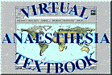

|
Related Sites Send us your URL! We welcome any requests to be included on this list. |
|
|
University of Washington Department of Anesthesiology
Frederick W. Cheney, Jr., MD, Chairman.
The Department was founded in 1960 and serves University Hospital, Harborview
Medical Center, Veterans Hospital and
Children's Hospital Medical Center, Seattle, Washington.
|
||
|
University of Washington Health Science Libraries
Connecting people with knowledge in the
health sciences at the University of
Washington.
|
||
|
National Library of Medicine: PubMed
PubMed is a project developed by the National Center for Biotechnology Information
(NCBI) at the National Library of Medicine (NLM), located at the National
Institutes of Health (NIH). It has been developed in conjunction with publishers
of biomedical literature as a search tool for accessing literature citations and linking to full-text journals at Web sites
of participating publishers. MEDLINE records are incorporated into PubMed weekly.
The PREMEDLINE database provides basic citation information and abstracts before
the full records are prepared and added to MEDLINE. New records are added to PREMEDLINE daily.
|
||
|
Global Regional Anesthesia Website
Joseph Eldor, MD, Editor. "This website is intended to promote the idea of REGIONAL
ANESTHESIA FOR ALL." Includes a comprehensive list of regional anesthesia-related sites.
|
||
|  |
The Virtual Anesthesia Textbook
The Virtual Anaesthesia Textbook (VAT) is a collaborative project involving many
individuals around the globe. Its goal is to create and maintain, using a familiar
'textbook' style, a comprehensive set of links to all known anaesthesia related
internet information.
|
|
|
A Guide to Spinal Anaesthesia for Caesarean Section
From the Local and Regional Anesthesia chapter of The Virtual Anesthesia Textbook. This guide by Dr. John Oyston is intended for the use of anesthetists and anesthesiologists who are already experienced in performing epidural anesthesia for Caesarean section, and wish to convert to spinal anesthesia.
|
||
|
LARA-L
LARA-L is an email discussion group is intended for anesthetists, anesthesiologists, researchers, veterinarians, students, and anyone else with a professional interest in local anesthetic agents and regional anesthetic methods and
techniques.
|
||
|
GasNet
The Anesthesiology Discussion Group is a forum for discussion of any aspect
of anesthesiology. It is open to anyone with a professional interest in
clinical issues or research in anesthesiology.
|
||